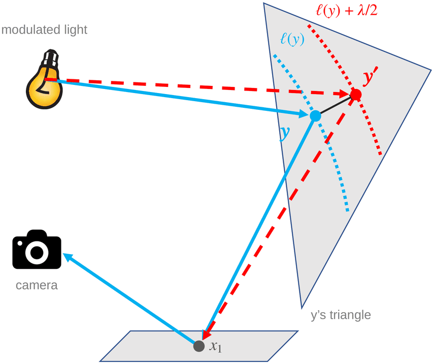
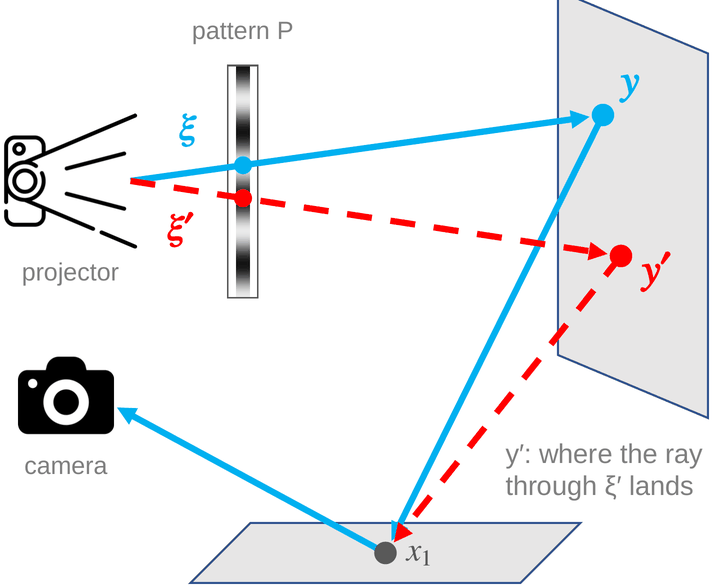
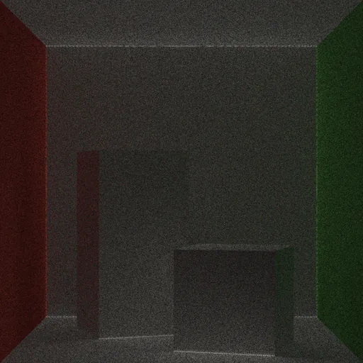
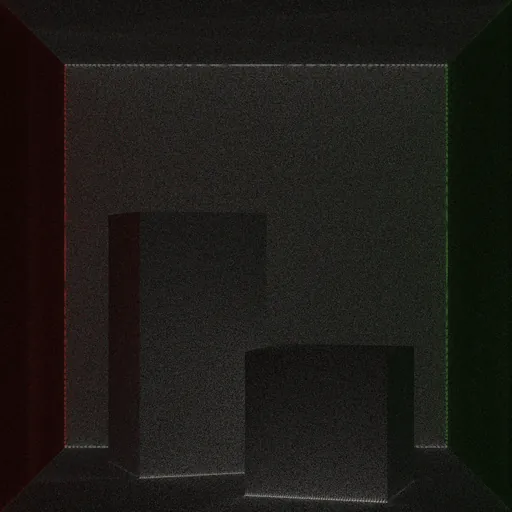
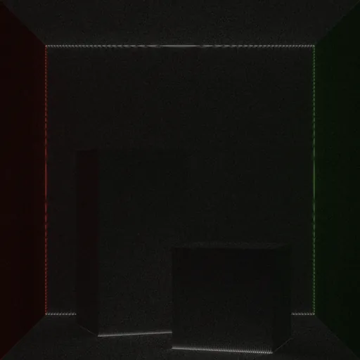
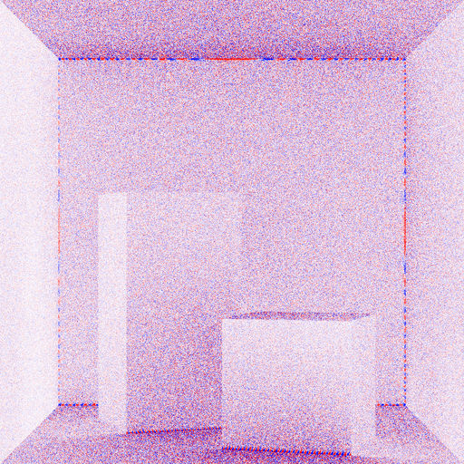
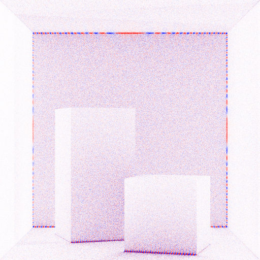
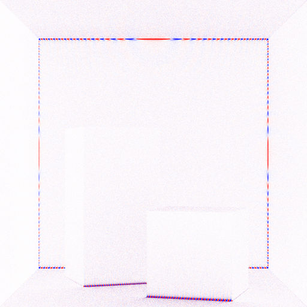

Applications


1Dartmouth College
SIGGRAPH Asia 2026, Conference Track
We propose a geometric antithetic sampling strategy for efficiently rendering spatiotemporally modulated light, encompassing continuous-wave time-of-flight (CW-ToF) and structured light systems. This is motivated by observing that modulated light transport can be decomposed into a slowly varying geometric term and a rapidly oscillating modulation term, where the latter dominates variance. Our key idea is to construct antithetic sample pairs by geometrically deforming a light path so that the modulation term changes sign while preserving similarity in the underlying transport. In both CW-ToF and structured light, antithetic samples lie on an antithetic manifold—the set of configurations with opposite modulation—and we search along it to find the path most similar to a given reference path, thereby maintaining strong negative correlation between paired samples. For CW-ToF, this corresponds to shifting paths in optical path-length space, while for structured light, it involves deforming emitter samples along the spatial modulation manifold in projector-coordinate space. By unifying both cases under this geometric deformation framework, our method cancels high-frequency modulation components through paired samples, leading to significant variance reduction and enabling more efficient simulation of coded illumination and sensing systems in computational imaging.
CW-ToF cameras modulate light in time; structured-light systems modulate it in space. Either way, every light path is weighted by a fast-oscillating modulation, and at high frequencies its large positive and negative contributions dominate the rendering noise. We pair each path with an antithetic path: a small geometric deformation of it whose modulation has the opposite sign. The oscillation cancels within the pair, while the underlying light transport stays similar.
(A) CW-ToFℓ(y′) = ℓ(y) ± λ/2

(B) Structured lightP(ξ′) = −P(ξ)

primalantithetic






@inproceedings{kim2026geometric,
title={Geometric Antithetic Sampling for Rendering Spatiotemporally Modulated Light},
author={Kim, Juhyeon and Cui, Jack and Jarosz, Wojciech and Pediredla, Adithya},
booktitle={SIGGRAPH Asia 2026 Conference Papers},
series={SA Conference Papers '26},
location={Kuala Lumpur, Malaysia},
publisher={ACM},
address={New York, NY, USA},
numpages={11},
year={2026},
doi={10.1145/3829340.3842310}
}